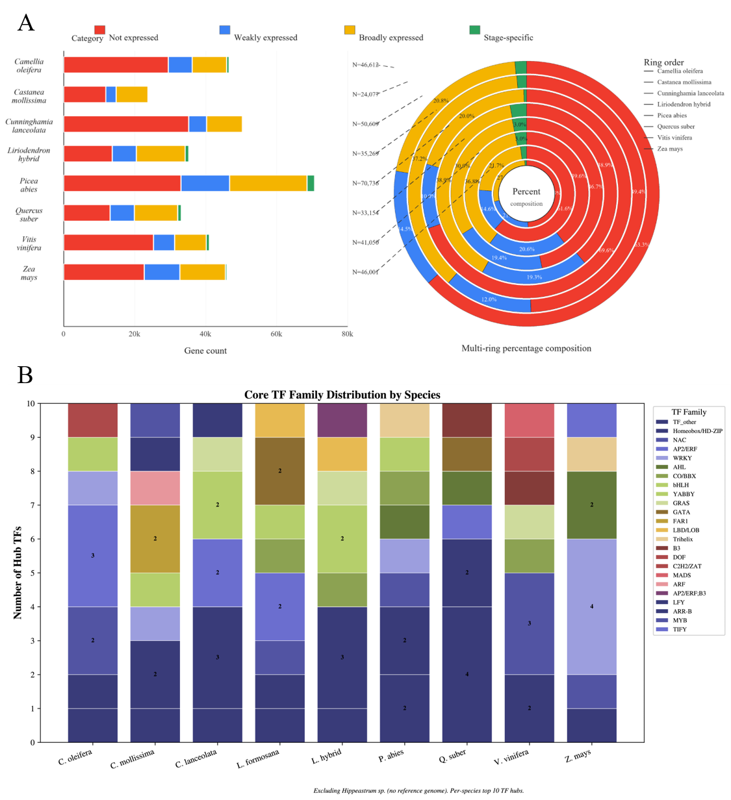
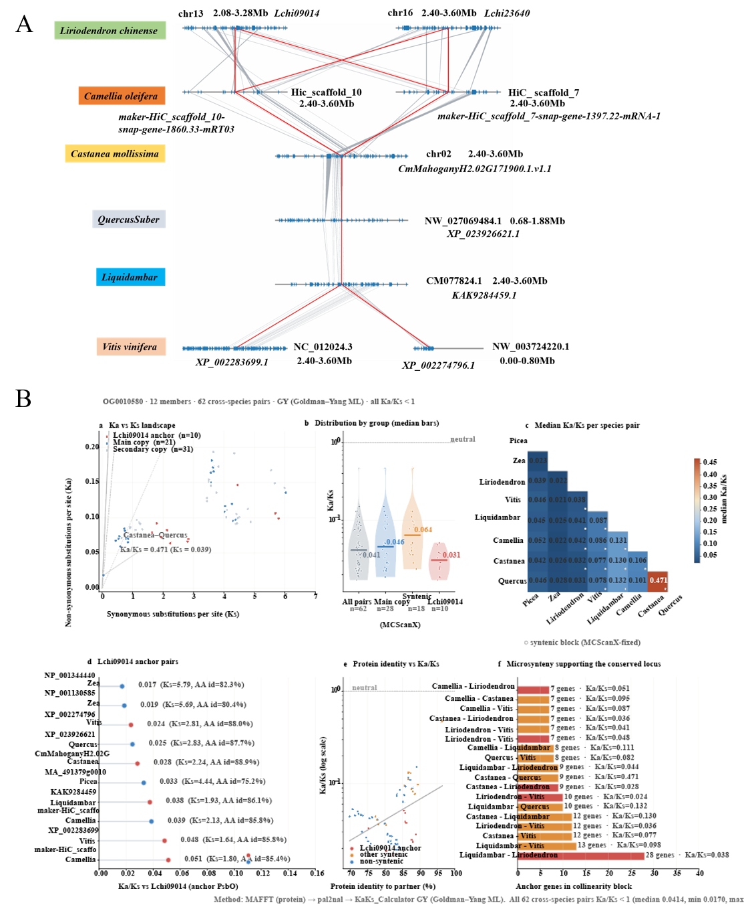

Species and Stage Coverage
Each card summarizes matrix counts, sample columns, data types and stage/treatment labels for the species.
Shared Regulatory Modules and Key Findings
Core conclusions are based on strictly shared orthogroups across Castanea mollissima, Liriodendron chinense / hybrid and Vitis vinifera, and serve as a comparison framework for the additional species.
Coexpression Network Query
Build a gene-centered network from the full FPKM sample matrix, retain clearly annotated genes with strong Pearson correlation, inspect positive and negative edges, and export the matched relationships. The published study summary and its Liriodendron hybrid network are retained below as the reference result.
Choose a species and enter an exact gene ID, then build the network.

Published L. hybrid query result
Diamond nodes denote SE-related regulators and circular nodes denote candidate coexpressed genes grouped by functional annotation. Solid light-gray and dashed blue links represent strong positive and negative relationships, respectively. This image preserves the manuscript result; the live workbench above recalculates a gene-centered network from the matrices distributed with the database.
Developmental Stage-Specificity (τ) Query
Calculate the developmental stage-specificity index from stage-level FPKM means, browse the four manuscript-defined expression classes, filter by peak stage or gene ID, and export all matched genes.
Select a species, then calculate its stage-specificity catalogue.

Expression-specificity reference
Figure 2 summarizes counts and percentage composition for the four expression classes across species, together with the family composition of core TF hubs. The query above exposes the gene-level τ values that were previously absent from the database interface.
Key Gene-Family Query
Search non-TF and TF gene families across the ten annotated species using curated family patterns or a custom NR-description keyword. Results include gene ID, best-hit accession, identity, coverage, e-value and the complete protein description.
Choose a family and species scope, then run the query.
PsbO/OEE1 Microsynteny and Ka/Ks Case Study
Browse the result behind the PsbO/OEE1 application example: an Lchi09014-anchored orthogroup, cross-species microsynteny support and evolutionary-constraint estimates calculated with the GY model.

Load the pair table to inspect Ka, Ks, Ka/Ks, amino-acid identity and synteny support.
Gene ID Search
Enter a gene or protein ID to query stage-level expression means, trend type, peak/minimum stage and available NR/functional annotation from the main species matrices. Indexes are loaded by species, so the page does not load all genes at startup.
Searchable species indexes are listed in the dropdown; selecting a species first is faster.
Primer Design
Design PCR primer pairs directly in the browser. Candidate pairs are filtered by length, melting temperature, GC content, homopolymers, 3′ stability and pair complementarity. Coordinates are 1-based on the submitted template.
Paste a DNA template. If no target is specified, the midpoint is used as the region that each amplicon must span.
Knockout and Overexpression Primer Design
Generate CRISPR knockout cloning oligos and overexpression cloning primers directly in the browser. All calculations are local; submitted sequences are not uploaded.
CRISPR/Cas Knockout Oligos
Find candidate guides on both strands and generate vector-ready forward/reverse oligos. Coordinates are 1-based on the submitted gene sequence.
Paste a genomic target sequence to search both strands for compatible PAM sites.
Overexpression Cloning Primers
Add vector homology arms, restriction sites, Gateway tails or other 5′ additions while calculating Tm and GC% from the gene-specific annealing regions.
Paste a coding sequence and optionally provide vector-specific 5′ additions.
BLAST Sequence Comparison
Run an offline BLAST-like local alignment against one or more subject FASTA records. Nucleotide searches examine both subject strands; use the NCBI link for production-scale database searches.
Query sequence
Subject sequence(s)
The offline search uses Smith–Waterman local alignment and reports the best hit per subject. For responsive browser use, each query–subject comparison is limited to 4 million matrix cells.
Transcriptome Data Inventory
Local matrices sorted by all available stages. In the local full version, file names open the corresponding TSV/TXT files.
| ID | Species | Type | Sample columns | Stage/treatment summary | Size | File |
|---|
Public RNA-seq / SRA Sample Browser
All public somatic embryogenesis transcriptome runs from the curated CrossSE-TED Table S1 catalog. Run IDs and BioProject IDs open the original NCBI/ENA pages; the direct link uses the original download_path when provided.
| Run | Species | Sample / stage | Library | BioProject | Platform | Size | Release | Original links | Details |
|---|
PubMed Literature Search
Query PubMed through NCBI E-utilities and connect publications with the species, RNA-seq datasets and somatic embryogenesis keywords used in this database.
Figure Gallery
Includes the manuscript expression-specificity, coexpression-network and PsbO/OEE1 Ka/Ks figures, cross-species shared OG results, Cunninghamia lanceolata PSK results, reference-guided trends and stage plots. Click a thumbnail to enlarge it.
Database Download Center
Export the database metadata already embedded in this GitHub single-file release: expression matrix inventory, public SRA run links, BioProject links, figure metadata, gene index summaries and a compact JSON metadata package.
Embedded Content
30 result figures, 10 species-level gene-search indexes, stage expression means, trend calls and available annotations.
Open gene searchLarge Matrix Files
The 1.15 GB raw FPKM/CPM/readcount matrices are represented by a downloadable inventory here; full matrices remain in the local full version.
View matrix inventoryPublic Data Links
SRA runs, ENA run pages, BioProject pages and original direct download_path values can be exported for reuse in scripts or supplementary tables.
Open public SRA browserExpression Matrices
Export all matrix and supplementary dataset records, including species, datatype, stages, file name and size.
SRA Run Links
Export all public RNA-seq records or only the currently filtered records from the SRA browser.
Projects and Figures
Export BioProject/ENA project links and figure metadata for manuscript tables or database documentation.
Index Package
Export a compact metadata package and gene index summary without embedding large image data URIs.
Expression Query
Query FPKM, read count and CPM for any gene across all samples in 10 species. Matrices are loaded on demand and decompressed directly in your browser, then results can be exported as CSV or TSV.
Orthologs
One-to-one orthogroups from OrthoFinder across the CrossSE-TED reference species. Choose a dataset and an ID type (gene, protein or OrthoFinder ID), then browse or paste IDs to find the matching orthogroup in every species. Data is loaded on demand and decompressed directly in your browser.
Differential Expression
Significant differentially expressed genes (padj < 0.05 and |log2FC| > 1) from DESeq2 across seven species and their somatic-embryogenesis stage / treatment comparisons. Select a species and comparison, optionally filter by direction or gene ID, then export the full result.
NR Annotation
Best-hit protein annotations against the NCBI non-redundant (NR) protein database produced by DIAMOND blastp for ten species. Nine species keep every gene / protein best hit; Hippeastrum uses the Top-1 hit per transcript. Select a species, optionally paste gene / protein IDs, then query and export the matched annotations.
Transcription Factors
Putative transcription factors across ten species, classified into families from the protein descriptions of their NCBI NR best hits (DIAMOND blastp). This homology / description-based catalogue depends on NR annotation quality and is intended as a quick lookup rather than a domain-based prediction. Select a species and (optionally) a TF family or gene / protein IDs, then query and export.